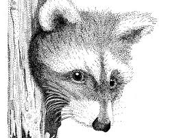
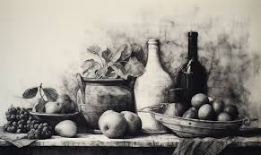
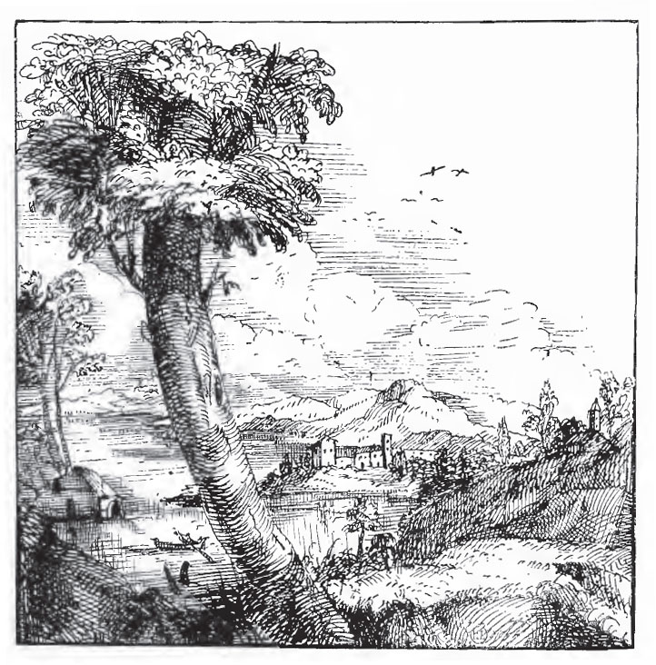
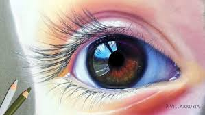

Técnicas artísticas en el dibujo
El dibujo es la base de muchas formas de arte y se basa en la creación de líneas y formas
sobre una superficie. Es un medio versátil, utilizado tanto para bocetos rápidos como para
obras acabadas.
Grafito o Lápiz: Es una de las técnicas más comunes, utilizando lápices de diferentes
durezas para lograr sombras y detalles. Es ideal para bocetos, estudios y retratos.

Carbón: Utilizado desde la prehistoria, el carbón permite crear líneas intensas y sombras
profundas. Es ideal para obras en gran formato y para trabajar el claroscuro.

Tinta y Plumilla: La tinta se aplica con plumas de metal o pinceles, permitiendo líneas
limpias y precisas. Fue una técnica popular en la ilustración científica y en la creación
de grabados.

Pastel: Se trata de pigmentos en forma de barra seca, que se aplican directamente sobre
papel, mezclándose y difuminándose fácilmente. Los pasteles pueden ser secos (con un acabado
polvoriento) o grasos (con una textura más densa). Artistas como Edgar Degas lo utilizaron ampliamente.
